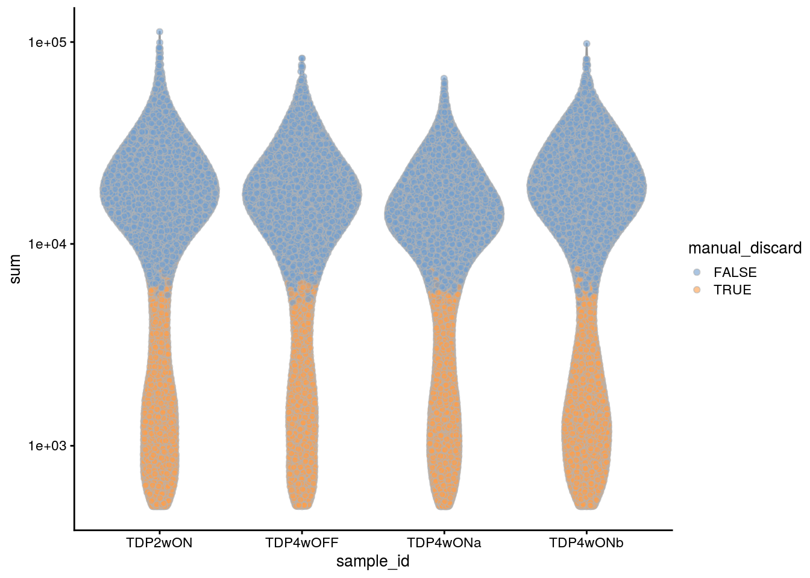
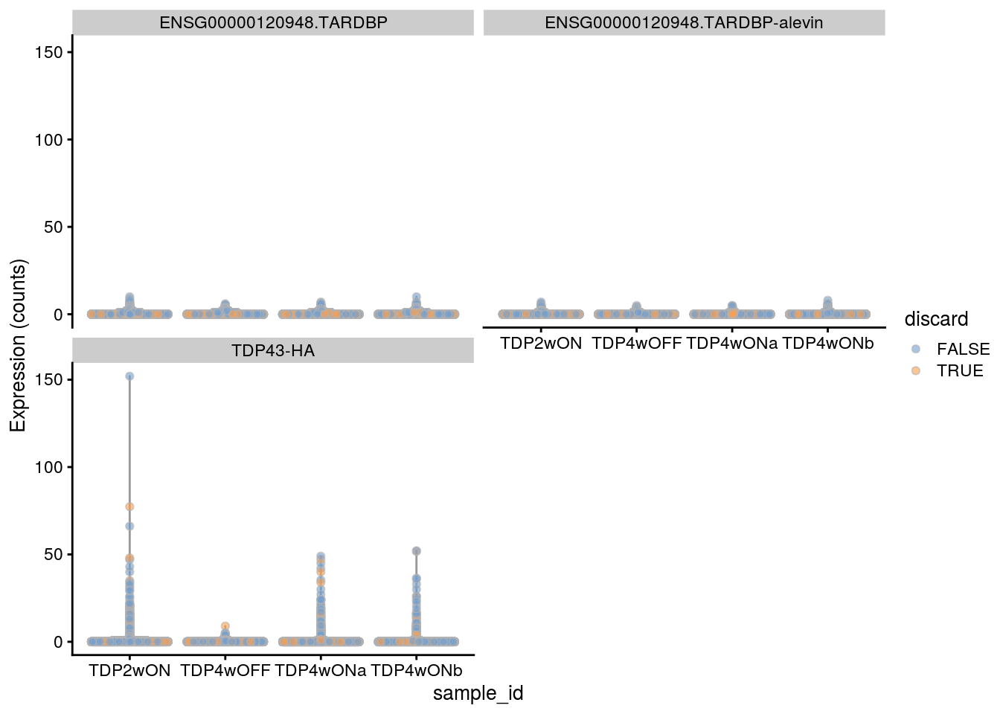
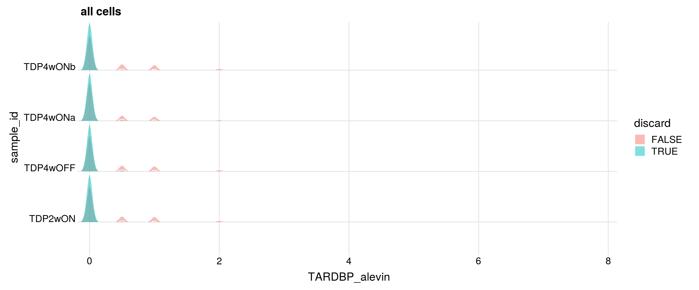
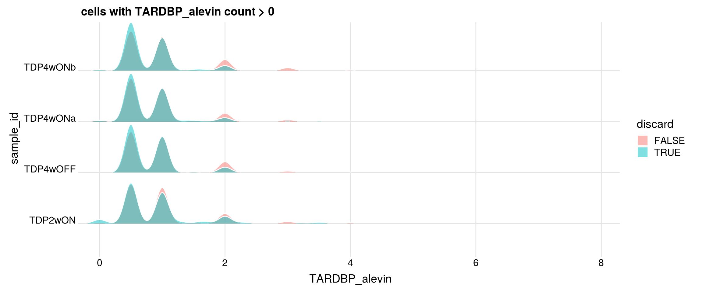
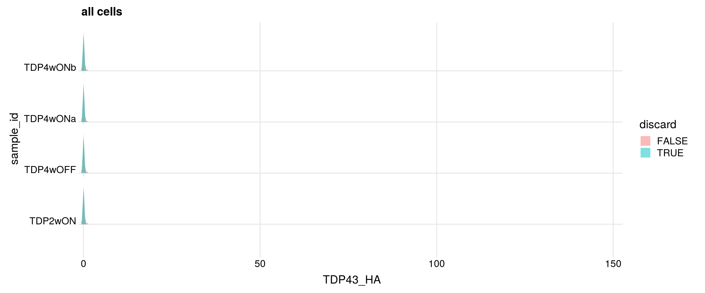
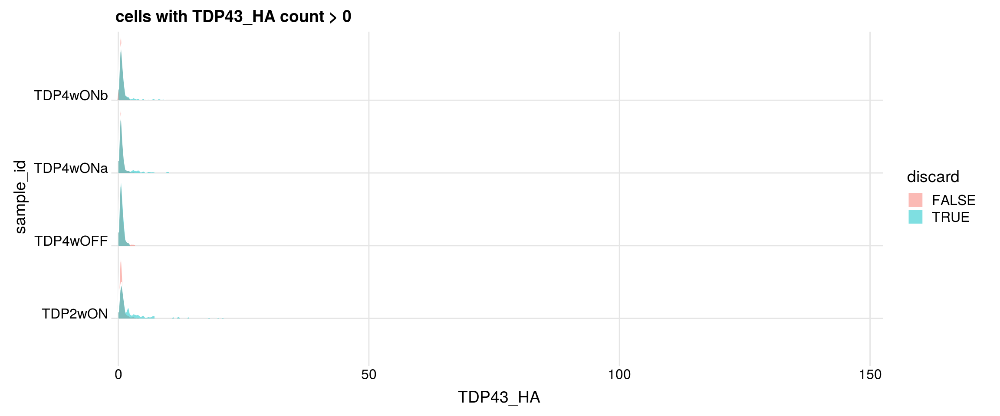

Last updated: 2020-11-11
Checks: 7 0
Knit directory: neural_scRNAseq/
This reproducible R Markdown analysis was created with workflowr (version 1.6.2). The Checks tab describes the reproducibility checks that were applied when the results were created. The Past versions tab lists the development history.
Great! Since the R Markdown file has been committed to the Git repository, you know the exact version of the code that produced these results.
Great job! The global environment was empty. Objects defined in the global environment can affect the analysis in your R Markdown file in unknown ways. For reproduciblity it's best to always run the code in an empty environment.
The command set.seed(20200522) was run prior to running the code in the R Markdown file. Setting a seed ensures that any results that rely on randomness, e.g. subsampling or permutations, are reproducible.
Great job! Recording the operating system, R version, and package versions is critical for reproducibility.
Nice! There were no cached chunks for this analysis, so you can be confident that you successfully produced the results during this run.
Great job! Using relative paths to the files within your workflowr project makes it easier to run your code on other machines.
Great! You are using Git for version control. Tracking code development and connecting the code version to the results is critical for reproducibility.
The results in this page were generated with repository version 6b07302. See the Past versions tab to see a history of the changes made to the R Markdown and HTML files.
Note that you need to be careful to ensure that all relevant files for the analysis have been committed to Git prior to generating the results (you can use wflow_publish or wflow_git_commit). workflowr only checks the R Markdown file, but you know if there are other scripts or data files that it depends on. Below is the status of the Git repository when the results were generated:
Ignored files:
Ignored: .DS_Store
Ignored: .Rhistory
Ignored: .Rproj.user/
Ignored: ._.DS_Store
Ignored: ._Rplots.pdf
Ignored: .__workflowr.yml
Ignored: ._neural_scRNAseq.Rproj
Ignored: analysis/.DS_Store
Ignored: analysis/.Rhistory
Ignored: analysis/._.DS_Store
Ignored: analysis/._01-preprocessing.Rmd
Ignored: analysis/._01-preprocessing.html
Ignored: analysis/._02.1-SampleQC.Rmd
Ignored: analysis/._03-filtering.Rmd
Ignored: analysis/._04-clustering.Rmd
Ignored: analysis/._04-clustering.knit.md
Ignored: analysis/._04.1-cell_cycle.Rmd
Ignored: analysis/._05-annotation.Rmd
Ignored: analysis/._Lam-0-NSC_no_integration.Rmd
Ignored: analysis/._Lam-01-NSC_integration.Rmd
Ignored: analysis/._Lam-02-NSC_annotation.Rmd
Ignored: analysis/._NSC-1-clustering.Rmd
Ignored: analysis/._NSC-2-annotation.Rmd
Ignored: analysis/.__site.yml
Ignored: analysis/._additional_filtering.Rmd
Ignored: analysis/._additional_filtering_clustering.Rmd
Ignored: analysis/._index.Rmd
Ignored: analysis/._organoid-01-1-qualtiy-control.Rmd
Ignored: analysis/._organoid-01-clustering.Rmd
Ignored: analysis/._organoid-02-integration.Rmd
Ignored: analysis/._organoid-03-cluster_analysis.Rmd
Ignored: analysis/._organoid-04-group_integration.Rmd
Ignored: analysis/._organoid-04-stage_integration.Rmd
Ignored: analysis/._organoid-05-group_integration_cluster_analysis.Rmd
Ignored: analysis/._organoid-05-stage_integration_cluster_analysis.Rmd
Ignored: analysis/._organoid-06-1-prepare-sce.Rmd
Ignored: analysis/._organoid-06-conos-analysis-Seurat.Rmd
Ignored: analysis/._organoid-06-conos-analysis-function.Rmd
Ignored: analysis/._organoid-06-conos-analysis.Rmd
Ignored: analysis/._organoid-06-group-integration-conos-analysis.Rmd
Ignored: analysis/._organoid-07-conos-visualization.Rmd
Ignored: analysis/._organoid-07-group-integration-conos-visualization.Rmd
Ignored: analysis/._organoid-08-conos-comparison.Rmd
Ignored: analysis/._organoid-0x-sample_integration.Rmd
Ignored: analysis/01-preprocessing_cache/
Ignored: analysis/02-1-SampleQC_cache/
Ignored: analysis/02-quality_control_cache/
Ignored: analysis/02.1-SampleQC_cache/
Ignored: analysis/03-filtering_cache/
Ignored: analysis/04-clustering_cache/
Ignored: analysis/04.1-cell_cycle_cache/
Ignored: analysis/05-annotation_cache/
Ignored: analysis/06-clustering-all-timepoints_cache/
Ignored: analysis/07-cluster-analysis-all-timepoints_cache/
Ignored: analysis/Lam-01-NSC_integration_cache/
Ignored: analysis/Lam-02-NSC_annotation_cache/
Ignored: analysis/NSC-1-clustering_cache/
Ignored: analysis/NSC-2-annotation_cache/
Ignored: analysis/TDP-01-preprocessing_cache/
Ignored: analysis/TDP-02-quality_control_cache/
Ignored: analysis/TDP-03-filtering_cache/
Ignored: analysis/TDP-04-clustering_cache/
Ignored: analysis/TDP-05-plasmid_expression_cache/
Ignored: analysis/TDP-06-cluster_analysis_cache/
Ignored: analysis/additional_filtering_cache/
Ignored: analysis/additional_filtering_clustering_cache/
Ignored: analysis/organoid-01-1-qualtiy-control_cache/
Ignored: analysis/organoid-01-clustering_cache/
Ignored: analysis/organoid-02-integration_cache/
Ignored: analysis/organoid-03-cluster_analysis_cache/
Ignored: analysis/organoid-04-group_integration_cache/
Ignored: analysis/organoid-04-stage_integration_cache/
Ignored: analysis/organoid-05-group_integration_cluster_analysis_cache/
Ignored: analysis/organoid-05-stage_integration_cluster_analysis_cache/
Ignored: analysis/organoid-06-conos-analysis_cache/
Ignored: analysis/organoid-06-conos-analysis_test_cache/
Ignored: analysis/organoid-06-group-integration-conos-analysis_cache/
Ignored: analysis/organoid-07-conos-visualization_cache/
Ignored: analysis/organoid-07-group-integration-conos-visualization_cache/
Ignored: analysis/organoid-08-conos-comparison_cache/
Ignored: analysis/organoid-0x-sample_integration_cache/
Ignored: analysis/sample5_QC_cache/
Ignored: analysis/timepoints-01-organoid-integration_cache/
Ignored: data/.DS_Store
Ignored: data/._.DS_Store
Ignored: data/._.smbdeleteAAA17ed8b4b
Ignored: data/._Lam_figure2_markers.R
Ignored: data/._Reactive_astrocytes_markers.xlsx
Ignored: data/._known_NSC_markers.R
Ignored: data/._known_cell_type_markers.R
Ignored: data/._metadata.csv
Ignored: data/._reactive_astrocyte_markers.R
Ignored: data/._~$Reactive_astrocytes_markers.xlsx
Ignored: data/data_sushi/
Ignored: data/filtered_feature_matrices/
Ignored: output/.DS_Store
Ignored: output/._.DS_Store
Ignored: output/._NSC_cluster1_marker_genes.txt
Ignored: output/._organoid_integration_cluster1_marker_genes.txt
Ignored: output/Lam-01-clustering.rds
Ignored: output/NSC_1_clustering.rds
Ignored: output/NSC_cluster1_marker_genes.txt
Ignored: output/NSC_cluster2_marker_genes.txt
Ignored: output/NSC_cluster3_marker_genes.txt
Ignored: output/NSC_cluster4_marker_genes.txt
Ignored: output/NSC_cluster5_marker_genes.txt
Ignored: output/NSC_cluster6_marker_genes.txt
Ignored: output/NSC_cluster7_marker_genes.txt
Ignored: output/additional_filtering.rds
Ignored: output/conos/
Ignored: output/conos_organoid-06-conos-analysis.rds
Ignored: output/conos_organoid-06-group-integration-conos-analysis.rds
Ignored: output/figures/
Ignored: output/organoid_integration_cluster10_marker_genes.txt
Ignored: output/organoid_integration_cluster11_marker_genes.txt
Ignored: output/organoid_integration_cluster12_marker_genes.txt
Ignored: output/organoid_integration_cluster13_marker_genes.txt
Ignored: output/organoid_integration_cluster14_marker_genes.txt
Ignored: output/organoid_integration_cluster15_marker_genes.txt
Ignored: output/organoid_integration_cluster16_marker_genes.txt
Ignored: output/organoid_integration_cluster17_marker_genes.txt
Ignored: output/organoid_integration_cluster1_marker_genes.txt
Ignored: output/organoid_integration_cluster2_marker_genes.txt
Ignored: output/organoid_integration_cluster3_marker_genes.txt
Ignored: output/organoid_integration_cluster4_marker_genes.txt
Ignored: output/organoid_integration_cluster5_marker_genes.txt
Ignored: output/organoid_integration_cluster6_marker_genes.txt
Ignored: output/organoid_integration_cluster7_marker_genes.txt
Ignored: output/organoid_integration_cluster8_marker_genes.txt
Ignored: output/organoid_integration_cluster9_marker_genes.txt
Ignored: output/sce_01_preprocessing.rds
Ignored: output/sce_02_quality_control.rds
Ignored: output/sce_03_filtering.rds
Ignored: output/sce_03_filtering_all_genes.rds
Ignored: output/sce_06-1-prepare-sce.rds
Ignored: output/sce_TDP_01_preprocessing.rds
Ignored: output/sce_TDP_02_quality_control.rds
Ignored: output/sce_TDP_03_filtering.rds
Ignored: output/sce_TDP_03_filtering_all_genes.rds
Ignored: output/sce_organoid-01-clustering.rds
Ignored: output/sce_preprocessing.rds
Ignored: output/so_04-group_integration.rds
Ignored: output/so_04-stage_integration.rds
Ignored: output/so_04_1_cell_cycle.rds
Ignored: output/so_04_clustering.rds
Ignored: output/so_06-clustering_all_timepoints.rds
Ignored: output/so_0x-sample_integration.rds
Ignored: output/so_TDP_04_clustering.rds
Ignored: output/so_TDP_05_plasmid_expression.rds
Ignored: output/so_additional_filtering_clustering.rds
Ignored: output/so_integrated_organoid-02-integration.rds
Ignored: output/so_merged_organoid-02-integration.rds
Ignored: output/so_organoid-01-clustering.rds
Ignored: output/so_sample_organoid-01-clustering.rds
Ignored: scripts/._bu_Rcode.R
Ignored: scripts/._plasmid_expression.sh
Ignored: scripts/._prepare_salmon_transcripts.R
Untracked files:
Untracked: Rplots.pdf
Untracked: analysis/Lam-0-NSC_no_integration.Rmd
Untracked: analysis/additional_filtering.Rmd
Untracked: analysis/additional_filtering_clustering.Rmd
Untracked: analysis/organoid-01-1-qualtiy-control.Rmd
Untracked: analysis/organoid-06-conos-analysis-Seurat.Rmd
Untracked: analysis/organoid-06-conos-analysis-function.Rmd
Untracked: analysis/organoid-07-conos-visualization.Rmd
Untracked: analysis/organoid-07-group-integration-conos-visualization.Rmd
Untracked: analysis/organoid-08-conos-comparison.Rmd
Untracked: analysis/organoid-0x-sample_integration.Rmd
Untracked: analysis/sample5_QC.Rmd
Untracked: data/Homo_sapiens.GRCh38.98.sorted.gtf
Untracked: data/Kanton_et_al/
Untracked: data/Lam_et_al/
Untracked: data/Sep2020/
Untracked: data/reference/
Untracked: data/~$Reactive_astrocytes_markers.xlsx
Untracked: scripts/bu_Rcode.R
Untracked: scripts/salmon-latest_linux_x86_64/
Unstaged changes:
Modified: analysis/05-annotation.Rmd
Modified: analysis/Lam-02-NSC_annotation.Rmd
Modified: analysis/TDP-04-clustering.Rmd
Modified: analysis/TDP-05-plasmid_expression.Rmd
Modified: analysis/_site.yml
Modified: analysis/organoid-02-integration.Rmd
Modified: analysis/organoid-04-group_integration.Rmd
Modified: analysis/organoid-06-conos-analysis.Rmd
Modified: analysis/timepoints-01-organoid-integration.Rmd
Note that any generated files, e.g. HTML, png, CSS, etc., are not included in this status report because it is ok for generated content to have uncommitted changes.
These are the previous versions of the repository in which changes were made to the R Markdown (analysis/TDP-05-00-filtering-plasmid-QC.Rmd) and HTML (docs/TDP-05-00-filtering-plasmid-QC.html) files. If you've configured a remote Git repository (see ?wflow_git_remote), click on the hyperlinks in the table below to view the files as they were in that past version.
| File | Version | Author | Date | Message |
|---|---|---|---|---|
| Rmd | 6b07302 | khembach | 2020-11-11 | fix cell barcode matching |
| html | 49397d8 | khembach | 2020-11-11 | Build site. |
| Rmd | f627bf7 | khembach | 2020-11-11 | use correct alevin counts |
| html | 80e0ebe | khembach | 2020-10-15 | Build site. |
| Rmd | 6d7e3c3 | khembach | 2020-10-15 | TDP-43-HA expression in filtered cells |
library(cowplot)
library(ggplot2)
library(Seurat)
library(SingleCellExperiment)
library(tximport)
library(scater)
library(LSD)
library(dplyr)
library(ggridges)We combine the quantification of the plasmid transcript and the endogenous TDP-43 with the CellRanger count matrix.
sce <- readRDS(file.path("output", "sce_TDP_02_quality_control.rds"))
## we only keep the four samples of the TDP-43 experiment
sample_ids <- c("TDP4wOFF", "TDP2wON", "TDP4wONa", "TDP4wONb")
sce <- sce[,colData(sce)$sample_id %in% sample_ids]
sce$sample_id <- droplevels(sce$sample_id)samples <- c("no1_Neural_cuture_d_96_TDP-43-HA_4w_DOXoff",
"no2_Neural_cuture_d_96_TDP-43-HA_2w_DOXON",
"no3_Neural_cuture_d_96_TDP-43-HA_4w_DOXONa",
"no4_Neural_cuture_d_96_TDP-43-HA_4w_DOXONb")
txi <- matrix(NA, nrow = 2)
for (i in 1:4) {
fi <- file.path("data", "Sep2020", "alevin_TDP43", samples[i],
"alevin/quants_mat.gz")
# import alevin quants
a <- tximport(fi, type="alevin")$counts
## match the alevin and CellRanger cell IDs
colnames(a) <- paste0(colnames(a), "-1.", sample_ids[i])
txi <- cbind(txi, a)
}
txi <- txi[,colnames(txi) != ""]
rownames(txi) <- c("ENSG00000120948.TARDBP-alevin", "TDP43-HA")We add the alevin counts to the CellRanger matrix.
## add two new rows to counts matrix and replace the counts for matching
## barcodes with the alevin counts
counts <- rbind(counts(sce), DelayedArray(matrix(0, nrow = 2,
ncol = ncol(counts(sce)))))
rownames(counts) <- c(rownames(sce), rownames(txi))
## match the barcodes
colnames(txi) %in% colnames(sce) %>% table.
FALSE TRUE
2667 9719 m <- match(colnames(txi), colnames(sce))
counts[rownames(txi),m[!is.na(m)]] <- txi[,which(!is.na(m))]
# adjust rowData
rd <- rbind(rowData(sce), data.frame(ensembl_id = c("ENSG00000120948", ""),
symbol = c("TARDBP_alevin", "TDP43-HA")))
rownames(rd) <- rownames(counts)
sce <- SingleCellExperiment(list(counts=counts),
colData = colData(sce),
rowData = rd)Based on the QC metrics, we now identify outlier cells:
cols <- c("sum", "detected", "subsets_Mt_percent")
log <- c(TRUE, TRUE, FALSE)
type <- c("both", "both", "higher")
drop_cols <- paste0(cols, "_drop")
for (i in seq_along(cols))
colData(sce)[[drop_cols[i]]] <- isOutlier(sce[[cols[i]]],
nmads = 3, type = type[i], log = log[i], batch = sce$sample_id)
# Overlap of outlier cells from two metrics
sapply(drop_cols, function(i)
sapply(drop_cols, function(j)
sum(sce[[i]] & sce[[j]]))) sum_drop detected_drop subsets_Mt_percent_drop
sum_drop 3644 3644 221
detected_drop 3644 7701 686
subsets_Mt_percent_drop 221 686 2849colData(sce)$discard <- rowSums(data.frame(colData(sce)[,drop_cols])) > 0
table(colData(sce)$discard)
FALSE TRUE
36281 9864 ## Plot the metrics and highlight the discarded cells
plotColData(sce, x = "sample_id", y = "sum", colour_by = "discard") +
scale_y_log10()
| Version | Author | Date |
|---|---|---|
| 80e0ebe | khembach | 2020-10-15 |
plotColData(sce, x = "sample_id", y = "detected", colour_by = "discard") +
scale_y_log10()
| Version | Author | Date |
|---|---|---|
| 80e0ebe | khembach | 2020-10-15 |
plotColData(sce, x = "sample_id", y = "subsets_Mt_percent",
colour_by = "discard")
| Version | Author | Date |
|---|---|---|
| 80e0ebe | khembach | 2020-10-15 |
We decided to additionally filter the cells in the TDP experiment samples. We use the same cutoffs as for the 96 days old neural cultures from the first experiment. We also remove the cell population with low number of UMIs and detected genes from the old neural cultures (223 days).
## filter the cells with less than 5000 UMIs in the TDP experiment samples
tdp_samples <- c("TDP2wON", "TDP4wOFF", "TDP4wONa", "TDP4wONb")
colData(sce)$manual_discard_sum <- colData(sce)$sum < 5000 &
colData(sce)$sample_id %in% tdp_samples
## filter the cells with less than 2500 detected genes
colData(sce)$manual_discard_detected <- colData(sce)$detected < 2500 &
colData(sce)$sample_id %in% tdp_samples
## highlight all manually discarded cells
colData(sce)$manual_discard <- colData(sce)$manual_discard_sum |
colData(sce)$manual_discard_detected
plotColData(sce, x = "sample_id", y = "sum", colour_by = "manual_discard") +
scale_y_log10()
| Version | Author | Date |
|---|---|---|
| 80e0ebe | khembach | 2020-10-15 |
plotColData(sce, x = "sample_id", y = "detected", colour_by = "manual_discard") +
scale_y_log10()
| Version | Author | Date |
|---|---|---|
| 80e0ebe | khembach | 2020-10-15 |
## highlight all discarded cells
colData(sce)$discard <- colData(sce)$manual_discard |
colData(sce)$discard
plotColData(sce, x = "sample_id", y = "detected", colour_by = "discard") +
scale_y_log10()
| Version | Author | Date |
|---|---|---|
| 80e0ebe | khembach | 2020-10-15 |
plotColData(sce, x = "sample_id", y = "sum", colour_by = "discard") +
scale_y_log10()
| Version | Author | Date |
|---|---|---|
| 80e0ebe | khembach | 2020-10-15 |
plotColData(sce, x = "sample_id", y = "subsets_Mt_percent",
colour_by = "discard")
| Version | Author | Date |
|---|---|---|
| 80e0ebe | khembach | 2020-10-15 |
TDP-43 expression per cell.
gene_ids <- c("ENSG00000120948.TARDBP", "ENSG00000120948.TARDBP-alevin",
"TDP43-HA")
plotExpression(sce, gene_ids,
x = "sample_id", exprs_values = "counts",
colour = "discard")
plotExpression(sce, gene_ids,
x = "discard", exprs_values = "counts",
colour = "sample_id")
Do the filtered cells express TDP-43 and TDP-43-HA?
df <- colData(sce) %>% as.data.frame() %>%
dplyr::select(sample_id, discard, detected, sum, subsets_Mt_detected,
discard) %>%
dplyr::mutate(TARDBP = as.vector(counts(sce["ENSG00000120948.TARDBP"])),
TARDBP_alevin = as.vector(counts(sce["ENSG00000120948.TARDBP-alevin"])),
TDP43_HA = as.vector(counts(sce["TDP43-HA"])))
for (g in c("TARDBP", "TARDBP_alevin", "TDP43_HA")){
cat("#### ", g, "\n")
p <- df %>%
ggplot(aes(x = get(g), y = sample_id, fill = discard)) +
geom_density_ridges(panel_scaling = FALSE, show.legend = TRUE,
alpha = 0.5, color = "white", scale = 0.95,
rel_min_height = 0.01) +
# facet_wrap(~group_id, nrow = 1) +
theme_ridges(center_axis_labels = TRUE) +
scale_x_continuous(expand = c(0, 0)) +
xlab(g) + ggtitle("all cells")
print(p)
## number of cells with gene count > 0
cat("cells with gene count > 0")
print(table(df$sample_id, df[,g] > 0))
## retained cells with gene count > 0
df1 <- df %>% dplyr::filter(get(g) > 0)
cat("discarded cells with gene count > 0")
print(table(df1$sample_id, df1$discard))
p <- df1 %>%
ggplot(aes(x = get(g), y = sample_id, fill = discard)) +
geom_density_ridges(panel_scaling = FALSE, show.legend = TRUE,
alpha = 0.5, color = "white", scale = 0.95,
rel_min_height = 0.01) +
# facet_wrap(~group_id, nrow = 1) +
theme_ridges(center_axis_labels = TRUE) +
scale_x_continuous(expand = c(0, 0)) +
xlab(g) + ggtitle(paste0("cells with ", g, " count > 0"))
print(p)
}#### TARDBP
| Version | Author | Date |
|---|---|---|
| 80e0ebe | khembach | 2020-10-15 |
cells with gene count > 0
FALSE TRUE
TDP2wON 7938 3092
TDP4wOFF 6233 2525
TDP4wONa 10545 3567
TDP4wONb 8793 3452
discarded cells with gene count > 0
FALSE TRUE
TDP2wON 2899 193
TDP4wOFF 2362 163
TDP4wONa 3295 272
TDP4wONb 3214 238
| Version | Author | Date |
|---|---|---|
| 80e0ebe | khembach | 2020-10-15 |
#### TARDBP_alevin 
cells with gene count > 0
FALSE TRUE
TDP2wON 8884 2146
TDP4wOFF 6973 1785
TDP4wONa 11714 2398
TDP4wONb 9850 2395
discarded cells with gene count > 0
FALSE TRUE
TDP2wON 2008 138
TDP4wOFF 1667 118
TDP4wONa 2230 168
TDP4wONb 2233 162
#### TDP43_HA 
cells with gene count > 0
FALSE TRUE
TDP2wON 9537 1493
TDP4wOFF 7596 1162
TDP4wONa 12484 1628
TDP4wONb 10722 1523
discarded cells with gene count > 0
FALSE TRUE
TDP2wON 1305 188
TDP4wOFF 1071 91
TDP4wONa 1484 144
TDP4wONb 1370 153
sessionInfo()R version 4.0.0 (2020-04-24)
Platform: x86_64-pc-linux-gnu (64-bit)
Running under: Ubuntu 16.04.6 LTS
Matrix products: default
BLAS: /usr/local/R/R-4.0.0/lib/libRblas.so
LAPACK: /usr/local/R/R-4.0.0/lib/libRlapack.so
locale:
[1] LC_CTYPE=en_US.UTF-8 LC_NUMERIC=C
[3] LC_TIME=en_US.UTF-8 LC_COLLATE=en_US.UTF-8
[5] LC_MONETARY=en_US.UTF-8 LC_MESSAGES=en_US.UTF-8
[7] LC_PAPER=en_US.UTF-8 LC_NAME=C
[9] LC_ADDRESS=C LC_TELEPHONE=C
[11] LC_MEASUREMENT=en_US.UTF-8 LC_IDENTIFICATION=C
attached base packages:
[1] parallel stats4 stats graphics grDevices utils datasets
[8] methods base
other attached packages:
[1] HDF5Array_1.16.1 rhdf5_2.32.2
[3] ggridges_0.5.2 dplyr_1.0.2
[5] LSD_4.1-0 scater_1.16.2
[7] tximport_1.16.1 SingleCellExperiment_1.10.1
[9] SummarizedExperiment_1.18.1 DelayedArray_0.14.0
[11] matrixStats_0.56.0 Biobase_2.48.0
[13] GenomicRanges_1.40.0 GenomeInfoDb_1.24.2
[15] IRanges_2.22.2 S4Vectors_0.26.1
[17] BiocGenerics_0.34.0 Seurat_3.1.5
[19] ggplot2_3.3.2 cowplot_1.0.0
[21] workflowr_1.6.2
loaded via a namespace (and not attached):
[1] Rtsne_0.15 ggbeeswarm_0.6.0
[3] colorspace_1.4-1 ellipsis_0.3.1
[5] rprojroot_1.3-2 XVector_0.28.0
[7] BiocNeighbors_1.6.0 fs_1.4.2
[9] farver_2.0.3 leiden_0.3.3
[11] listenv_0.8.0 ggrepel_0.8.2
[13] codetools_0.2-16 splines_4.0.0
[15] knitr_1.29 jsonlite_1.7.0
[17] ica_1.0-2 cluster_2.1.0
[19] png_0.1-7 uwot_0.1.8
[21] sctransform_0.2.1 compiler_4.0.0
[23] httr_1.4.1 backports_1.1.9
[25] Matrix_1.2-18 lazyeval_0.2.2
[27] later_1.1.0.1 BiocSingular_1.4.0
[29] htmltools_0.5.0 tools_4.0.0
[31] rsvd_1.0.3 igraph_1.2.5
[33] gtable_0.3.0 glue_1.4.2
[35] GenomeInfoDbData_1.2.3 RANN_2.6.1
[37] reshape2_1.4.4 rappdirs_0.3.1
[39] Rcpp_1.0.5 vctrs_0.3.4
[41] ape_5.4 nlme_3.1-148
[43] DelayedMatrixStats_1.10.1 lmtest_0.9-37
[45] xfun_0.15 stringr_1.4.0
[47] globals_0.12.5 lifecycle_0.2.0
[49] irlba_2.3.3 future_1.17.0
[51] MASS_7.3-51.6 zlibbioc_1.34.0
[53] zoo_1.8-8 scales_1.1.1
[55] promises_1.1.1 RColorBrewer_1.1-2
[57] yaml_2.2.1 reticulate_1.16
[59] pbapply_1.4-2 gridExtra_2.3
[61] stringi_1.4.6 BiocParallel_1.22.0
[63] rlang_0.4.7 pkgconfig_2.0.3
[65] bitops_1.0-6 evaluate_0.14
[67] lattice_0.20-41 Rhdf5lib_1.10.0
[69] ROCR_1.0-11 purrr_0.3.4
[71] labeling_0.3 patchwork_1.0.1
[73] htmlwidgets_1.5.1 tidyselect_1.1.0
[75] RcppAnnoy_0.0.16 plyr_1.8.6
[77] magrittr_1.5 R6_2.4.1
[79] generics_0.0.2 pillar_1.4.6
[81] whisker_0.4 withr_2.2.0
[83] fitdistrplus_1.1-1 survival_3.2-3
[85] RCurl_1.98-1.2 tibble_3.0.3
[87] future.apply_1.6.0 tsne_0.1-3
[89] crayon_1.3.4 KernSmooth_2.23-17
[91] plotly_4.9.2.1 rmarkdown_2.3
[93] viridis_0.5.1 grid_4.0.0
[95] data.table_1.12.8 git2r_0.27.1
[97] digest_0.6.25 tidyr_1.1.0
[99] httpuv_1.5.4 munsell_0.5.0
[101] beeswarm_0.2.3 viridisLite_0.3.0
[103] vipor_0.4.5